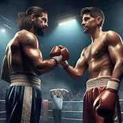

Golpes No Permitidos
El reglamento del boxeo prohíbe ciertos golpes para proteger la salud de los boxeadores. Su uso puede generar sanciones y lesiones graves.
1. Golpes en la nuca
Pueden afectar la médula espinal y causar conmociones cerebrales.
2. Golpes en los riñones
Provocan dolor crónico y daños internos.
3. Golpes después de la campana
Generan desorientación y sanciones disciplinarias.
4. Cabezazos
Pueden causar fracturas y cortes graves.
5. Golpes por debajo del cinturón
Provocan dolor extremo y descalificación.
6. Uso del codo
Peligroso para la visión y la estructura ósea facial.

Hecho por
- Islas Ávila Eduardo - ISC
- Jiménez Vega Luis Manuel - ISC
- Segundo Cruz Ernesto - ISC
- Azuara Córdoba Carol Angélica - AE
- Martínez Vázquez Dann - AE
- Olvera García Oswaldo Yael - AE
- Roldan Diaz Brenda Valeria - AE
- Diaz Tierra Leonel Isaac - AE
- Pérez Flores Celene Abigail - PS
- Zepeda Velasco Diego Alberto - PS
Asignatura: Ética, Neuroanatomía, Psicología